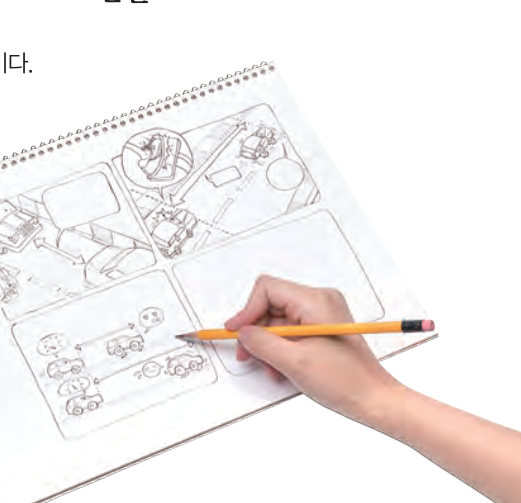

위치 에너지와 운동 에너지는 어디에 있을까? 주변에서 사례를 찾아 정리하고, 가상 롤러코스터와 제동 거리 실험실로 에너지가 어떻게 바뀌고 쓰이는지 확인한 뒤 대단원 최종 점검과 골드버그 장치로 마무리하자.
🎯 이 탐구를 수행하면 — 일상생활에서 위치 에너지와 운동 에너지가 있는 물체를 조사하여 설명할 수 있다.
탐구 · 조사일상생활에서의 위치 에너지와 운동 에너지 120~121쪽
120쪽꼭꼭 숨어라. — 위치 에너지와 운동 에너지는 어디에 있을까?
모둠이 조사할 장소(놀이공원, 학교, 등하굣길, 경기장 등)를 선택한다.
조사 선택한 장소에서 위치 에너지만 있는 물체, 운동 에너지만 있는 물체, 위치 에너지와 운동 에너지가 모두 있는 물체를 조사하여 그림으로 그린다.
사례를 일과 에너지 관계로 설명하는 자료를 만든다.
의사소통 그림과 설명 자료를 정리하여 모둠별로 발표한다.
121쪽예시 — 롤러코스터: 처음 출발 지점을 기준면으로 할 때 중력에 대해 일을 하여 높은 곳으로 올라갔으므로 위치 에너지가 증가한다. 높은 곳에서 떨어질 때에는 중력이 롤러코스터를 아래로 떨어지게 한 일의 양만큼 운동 에너지를 가진다.
조사 장소
위치 에너지만 있는 물체
운동 에너지만 있는 물체
둘 다 있는 물체
평가 기준
스스로 평가
탐구 기능 적절한 사례를 제시하였는가?
인성 발표 자료를 만들 때 충분히 의사소통하였는가?
인성 다른 모둠의 발표를 경청하고, 공정하게 평가하려고 노력하였는가?
시뮬레이션롤러코스터의 에너지 따라가기 121쪽
가상 롤러코스터열차를 움직여 위치 에너지와 운동 에너지를 비교하자 (마찰 무시, 출발 지점 바닥을 기준면)
1열차가 꼭대기에서 멈춰 있을 때에는 이 있고, 꼭대기에서 내려가는 동안에는 이 있으며, 가장 낮은 곳(기준면)을 달릴 때에는 이 있다.
핵심역량 키우기자동차 과속의 위험성 안내 자료 만들기 122쪽

122쪽속력, 운동 에너지, 일을 이용하여 안전거리 확보의 중요성을 알리는 만화를 그린다.
달리던 자동차가 브레이크를 밟으면 미끄러지다가 멈춘다. 이것은 자동차와 바닥 사이에 마찰력이 작용하기 때문이다. 이때 자동차의 운동 에너지가 클수록 자동차가 미끄러지는 거리가 증가한다.
제동 거리 실험실속력을 바꿔 브레이크를 밟아 보자
1자동차의 속력이 2 배가 되면 운동 에너지는 배가 되고, 마찰력이 한 일로 운동 에너지가 모두 없어질 때까지 미끄러지는 거리도 약 배가 된다.
💬자동차의 속력이 빠를수록 확보해야 하는 안전거리가 증가하는 까닭을 ‘속력, 운동 에너지, 일’을 이용하여 설명하고, 안전 안내 문구를 만들어 보자.
🔑열쇠 모으기 처마에서 떨어지는 빗방울의 에너지는 어떻게 생긴 것일까? '중력, 일, 자유 낙하, 운동 에너지'를 사용하여 설명해 보자.
스스로 정리하기2. 일과 에너지 123쪽
✔옳으면 O, 옳지 않으면 X
⑴ 에너지를 가지고 있는 물체는 일을 할 수 있다.
⑵ 물체가 자유 낙하 할 때 중력이 한 일은 운동 에너지보다 크다.
⑶ 질량이 m인 물체를 높이 h만큼 일정한 속력으로 들어 올릴 때 중력에 대해 한 일의 양은 9.8mh이다.
✔위치 에너지만 있는 경우, 운동 에너지만 있는 경우, 둘 다 있는 경우를 고르시오. (기준면: 지면)
⑴ 공중에서 정지한 놀이 기구
⑵ 지면에서 굴러가는 볼링공
⑶ 떨어지는 스카이다이버
⑷ 위로 올라가는 로켓
평가 기준
스스로 평가
일상생활에서 위치 에너지와 운동 에너지가 있는 물체를 조사하여 설명할 수 있다.
속력과 운동 에너지로 안전거리의 중요성을 설명할 수 있다.
대단원 · 개념 짚고 가기Ⅳ. 운동과 에너지 124쪽
➊시간에 따라 속력이 일정한 운동을 운동이라고 하며, 이때 이동 거리는 시간에 한다.
➋공기 저항이 없을 때 높은 곳에서 가만히 놓은 물체가 중력을 받아 떨어지는 운동을 운동이라 하며, 지구에서 질량과 관계없이 1 초마다 약 m/s씩 빨라진다.
➌일의 양은 ‘힘의 크기 × ’로 구하며, 단위는 을 사용한다. 물체를 들어 올릴 때 한 일의 양은 그 높이에서 물체의 에너지와 같다.
➍중력에 의한 위치 에너지는 ‘ × 질량 × 높이’로 구하고, 운동 에너지는 질량에 하고 에 비례한다.
대단원 · 스스로 최종 점검하기개념 적용하기 124~125쪽
01중력에 의한 위치 에너지에 대한 설명으로 옳지 않은 것은 이다.
03진공에서 구슬과 깃털이 동시에 낙하하는 연속 사진에 대한 설명으로 옳은 것을 모두 고르시오.
04질량이 1 kg인 물체 A는 4 m/s, 질량이 2 kg인 물체 B는 2 m/s의 속력으로 운동한다. A의 운동 에너지는 B의 배이다.
05질량이 2 kg인 상자를 1 m 높이까지 일정한 속력으로 들어 올렸다. 상자를 들어 올리는 데 한 일은 J이고, 바닥을 기준면으로 할 때 1 m 높이에 있는 상자의 위치 에너지는 J이다. 따라서 들어 올리는 일이 모두 로 전환되었다.
06질량이 2 kg인 물체 대신 4 kg인 물체가 자유 낙하 할 때 시간-속력 그래프는 .
07모니터에 일정한 간격으로 가림막을 붙이고 자유 낙하 하는 물체의 동영상을 재생하며 가림막 사이로 물체가 보일 때마다 손뼉을 치면, 손뼉 소리의 빠르기는 점점 .
프로젝트골드버그 장치 만들기 126쪽
골드버그(1883~1970)는 매우 단순한 일을 복잡한 과정으로 수행하는 장치를 만화로 그렸는데, 이 장치를 골드버그 장치라고 부른다. 골드버그 장치는 보는 사람들에게 즐거움을 줄 뿐만 아니라, 직접 만드는 사람들이 공학적 지식을 적용한 재미있는 상상력을 발휘할 수 있게 한다.
🛠우리 모둠의 골드버그 장치 계획 — 수행하는 일과 수행 과정(에너지 전환 단계)을 써 보자.
평가 기준
스스로 평가
등속 운동과 자유 낙하 운동의 차이를 설명할 수 있다.
일과 위치 에너지, 운동 에너지의 관계를 설명할 수 있다.
제출학생 정보 · 제출하기
모든 활동을 마친 뒤 제출하면 전체가 한 번에 채점되고 피드백이 나타나요. 답안은 선생님 스프레드시트(중3 탭)에 기록돼요.